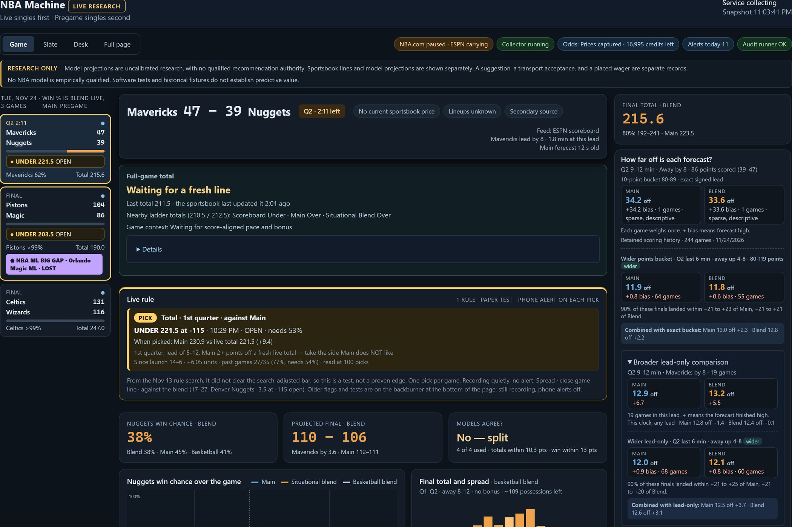

Technical and integration support
Work through APIs, authentication, logs and data to explain a failure. Give engineering a reproducible case and keep the customer informed through resolution.
Read a root-cause investigation →I’m Jahvar Edwards, a Team Lead and Senior Integration & Developer Support Analyst. I investigate complex customer issues across APIs, logs and databases, then work with Product and Engineering to reach a resolution.
Outside work, I direct and operate an AI-assisted data platform across four sports. It gives me a place to put that same judgment into practice: monitor the inputs, trace failures and verify what the system actually produces.
Personally directed and operated · AI-assisted build · New Jersey, US

My day job provides the customer and escalation experience. The platform shows how I apply it when I own the system and the investigation.
Work through APIs, authentication, logs and data to explain a failure. Give engineering a reproducible case and keep the customer informed through resolution.
Read a root-cause investigation →Watch for missing output as well as stopped processes. Use monitoring, runbooks, backups and replay checks to make changes with a clear recovery path.
Follow the operating workflow →Trace a forecast to its inputs, account for changing availability and preserve the record needed to evaluate it. Make uncertainty visible before it becomes a confident answer.
Explore the evaluation process →The platform collects game events, player availability and market data across basketball, hockey, football and baseball. It uses several methods to estimate what may happen next, saves their predictions and compares them with the eventual results.
For example, a late player scratch changes the inputs. A delayed feed can make a plausible forecast out of date. The work is understanding those dependencies and showing when an output needs more evidence.
A running process is only the beginning. I check whether the expected output arrived, whether its inputs were usable and whether its result can be evaluated afterwards.
The platform also runs scheduled work unattended. Health checks and phone alerts help surface stale feeds, stalled jobs and resource constraints so I can investigate the part that needs attention.
And when it cannot trust what it is being told, it stops. A machine that confidently prints a wrong number is worse than one that says nothing.
Four sport-specific systems (NBA, NHL, NFL, MLB) on one Windows host, using scheduled jobs and long-running collector and scoring services. Ingest covers play-by-play, box scores, injuries, rosters and confirmed lineups, plus paid and free odds — paid pulls metered against a per-day credit budget with a usage ledger. Storage is SQLite with WAL, scheduled checkpoints, index tuning and archival.
Each sport runs a Main model plus challengers — score-state win probability, Poisson goal models, drive simulation, four-factor and shot-rate × shot-quality structural blends, and period/quarter/half panels. Guards fail closed on malformed vendor data. Operations: health checks per job, resource and storage ceilings, push alerts, written runbooks, staged installs with tested rollback, nightly golden-case replays.
Five connected stages. Each needs a clear input, a useful output and a way to notice when something is missing.
Collectors gather game events, player status and prices on their own schedules. Source freshness and paid API budgets are part of the operating checks.
SQLite records preserve inputs, predictions and outcomes. Keeping the earlier record makes it possible to investigate an output and evaluate a method without rewriting its history.
A reference model and challenger methods run alongside one another. Differences between them remain visible, with availability and uncertainty affecting how an output is interpreted.
Settled results support checks of forecast error, bias and uncertainty. Review points are defined in advance, and a promising challenger does not automatically replace the reference.
Guards can hold an output when required inputs or validation checks are missing. Operating alerts help separate a deliberate hold from a service that has stopped doing its job.
I set priorities and operating rules, direct AI-assisted implementation, investigate failures and check the results. Backups, replay checks and rollback procedures support that work.
Screens captured from my platform on 24 November 2026. These are recorded examples; the displayed forecasts and health states describe that capture, not a live feed.


A short run of good results can be misleading. The platform uses declared review points, preserved records and comparisons against a reference to make decisions easier to audit.


Finding a source is only the first step. I record what it contributes, whether I can access it and what still needs checking before it can be used.
The source record identifies the existing game-event and market-data connections, along with the information each provides.
Some historical and shot-quality data stays out while usage terms or licensing remain unverified. Potential value is recorded separately from permission to use it.
Premium feeds and raw tracking data have access limits. I document those gaps so the system’s conclusions can be read with the limits in view.
The evaluation limit: historical data can help diagnose a result. It does not, by itself, prove that a method predicts future games well.
The archived technical view records source-by-source access states and coverage. The summary above explains the decisions without requiring you to read its tables.
Open the full-size dashboard image →

These cases show the work behind the dashboards: establish the symptom, trace the cause, make a controlled change and verify the outcome.
The screen was green. Every program was running. But the machine had quietly stopped producing anything.
I found it by asking a different question — not "is it running?" but "what should it have made in the last hour, and did it?" Three things had gone wrong at once: the computer was overloaded, one database lookup had got slow as the data grew, and a supplier had started sending broken records.
I added an index that took one lookup from about two seconds to under a thousandth of a second, and changed the broken-data path so it stops instead of carrying on.
Lesson: a green light is not evidence. Check the output, not the status.
I edited one file. That file was being watched by a safety check, which noticed the change and refused to run — exactly as designed. But it refused silently, and everything downstream of it produced nothing for three days before I noticed.
I made that refusal shout instead of whisper, and I started batching risky changes into one window a week rather than editing whenever an idea struck.
Lesson: a safety mechanism that fails quietly is only half a safety mechanism.
A log file had grown large enough to threaten the whole disk. The tempting move is to delete it immediately. Instead I worked out what recovery actually depended on, took a copy I had verified I could restore from, trimmed it to 36 GB, checked everything still opened — and only deleted the backup copy a day later.
Lesson: when you are under pressure is exactly when you do things in order.
I went looking for a component's track record and found it empty. Not bad — empty. For every game it had ever been scheduled for.
Every stage was timing itself off when a game was scheduled to start rather than when it actually started. Games start late, so each stage's window closed before its inputs arrived. Nothing ever errored, because nothing ever failed — it just never ran.
Lesson: nobody reports the bug where nothing happens. Now I watch for silence.
Built with AI assistance. I use AI heavily for implementation. I direct the architecture and operating rules, investigate failures and verify changes through logs, replay and observed output. The platform is an independent project I operate on my own machine.
The models have not demonstrated a reliable advantage over closing betting markets. The evidence here is the operating work: making failures visible, preserving results, testing assumptions and changing direction when the evidence calls for it.
If this work connects with your team, I’m happy to discuss an incident, trace a workflow or explain the decisions behind the platform.
Customer escalations, missing output, data quality or safe recovery: choose a starting point and I can walk through the investigation and what changed.
View this website’s source on GitHub. The repository contains this portfolio; the platform code is private.